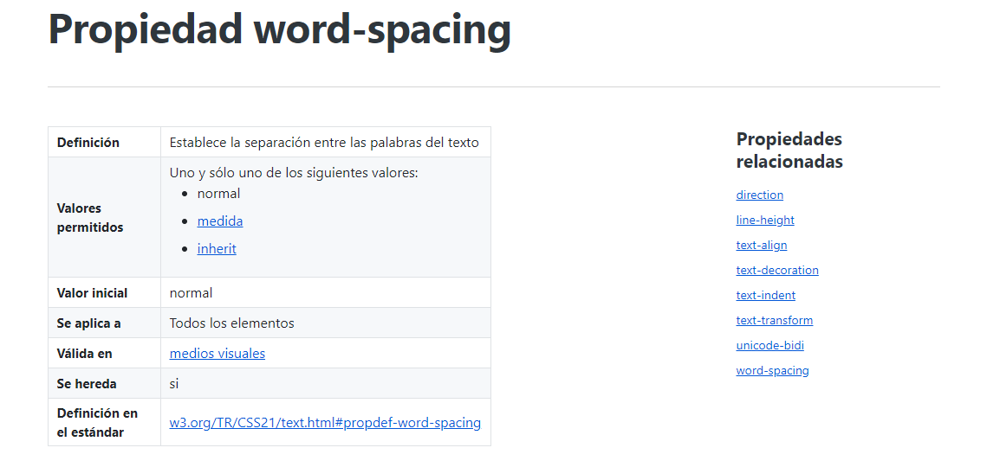
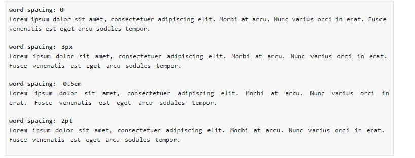
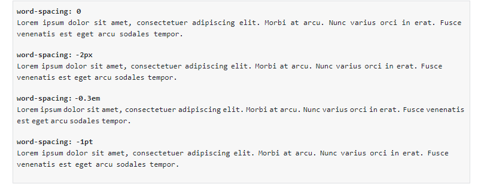

Word-spacing hace que puedas aumentar los espacios de palabras del texto.
Si se indica una medida, se considera que es el espaciado adicional que se añade a la separación normal de cada palabra:
Si se utilizan medidas, también es posible indicar valores negativos, de forma que la separación entre palabras sea inferior a la normal:
La informática, también llamada computación, es la rama de la ciencia que se encarga de estudiar la administración de métodos, técnicas y procesos con el fin de almacenar, procesar y transmitir información y datos en formato digital.